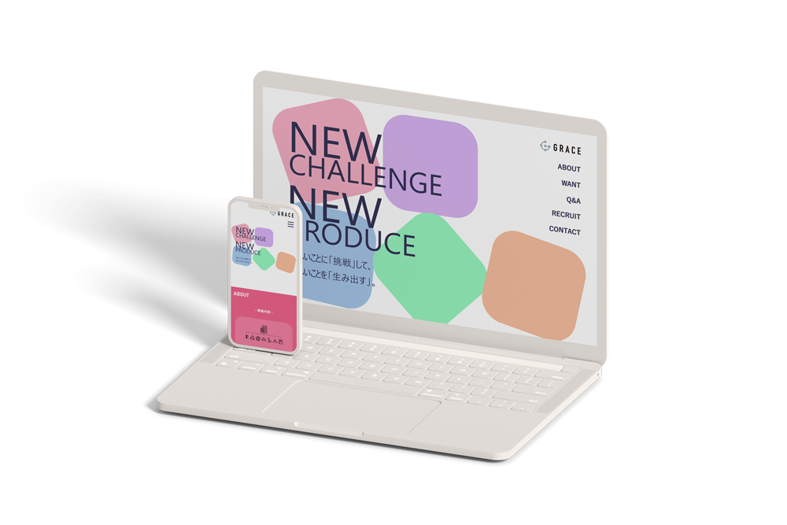

株式会社GRACE 採用LP
＠ 職業訓練 グループ制作
コーディング
グループ内分担について
ディレクター、デザインター、コーダー、プレゼン資料作成のうち、コーダーをメインで担当しました。
デザイン担当が作成したデザインカンプを元に、適宜イメージや動き、レイアウトなど細かな点についてメンバーとすり合わせをしながらコーディングしました。
メインビジュアル・ナビゲーション・共通部品（ヘッダー、各セクションの大枠、フッター）、ABOUTの実装および、コーディングにおけるルール決めなどを行いました。
WANT、Q&A、RECRUIT、CONTACTの実装は他メンバーに作業を振り分けて担当してもらいました。
制作時間
企業からの要件整理：2時間
コーディング：24時間
制作の経緯
職業訓練（マークアップWebデザイン科）のグループ制作課題として、訓練生の採用実績を多数持つ、株式会社GRACE様の職業訓練生を対象とした採用LPを制作しました。
サイトの目的
- LPを訪れた職業訓練生による採用に関する問い合わせ数を上げる
ターゲット
職業訓練校である専門学校東京テクニカルカレッジ テラハウスICAに通う職業訓練生
使用ツール
- Photoshop
- XD
- Dreamweaver
- FFFTP
意識した点
コーディングにおける分業の仕方
バージョン管理ツールが使用できない環境だったため、コードを統合する際にそれぞれの更新箇所がバッティングしないよう、以下ようにルールを決めました。
- index.htmlを更新するのは原則メインコーダー（自分）のみで、各メンバーの更新を反映させる際は、メインコーダーが更新箇所を確認した上で、ソースに追加する。
- ソースをFTPにアップロードする前後で必ずメンバーに声かけをする。
- セクション区切りでコーディングを分担するため、全てのセクションに渡る共通のスタイルはstyle.cssで定義し、各セクションのスタイルは各セクションごとにcssを作成して記述する。※jsについても同様。
共通するcssの定義はまとめる
cssで同じ定義が重複することで無駄なコードが増えないように、全セクションで共通する定義はstyle.css内で設定しました。
自分以外の作業者が見てもわかりやすい記述を心がける
コーディングは基本的に分業制のため、なるべく誰が見ても分かりやすいように記述することを心がけていました。特に意識したことは以下の通りです。
- cssの記述する順序は、まず初めに共通設定を記述し、以下はヘッダーからフッターまで（ページの上から下まで）の流れで記述する。
- 何を定義しているのか、何の処理なのか、一見分かりにくいところは適宜コメントを付与する。
- cssセレクタの指定では、どの要素を指定しているのか直感的に分かりやすいように、場合によってはクラス名だけでなく、敢えて親要素（のクラス名）を記述するなど、とにかく可読性を心がけた。